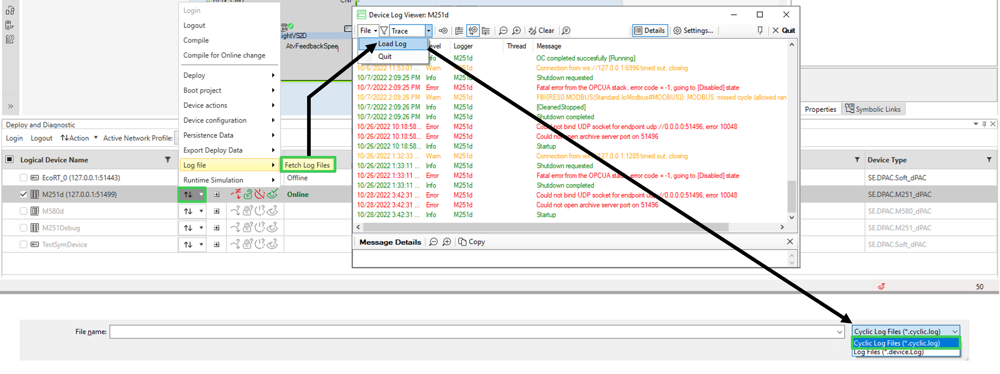

Log files contain protocol information about the solution and its devices.
The log files identifies specific errors within the solution and the devices. Thus, use them to troubleshoot the issue faced.
In each device two log files are stored. Alternatively, each of these two log files is overwriting the other one to help prevent data loss. In addition, another file cyclically maintains record of detected errors.

To open the EcoRT log file:
Open the Deploy and Diagnostic editor.
Open the list of actions of the wanted device.
Select .
The Device Log Viewer dialog box opens.
To switch to the cyclic log files:
In the Device Log Viewer dialog box, select File.
In the drop down list, select Load Log that opens the Open Log File dialog box.
Click on Log Files and in the drop down list select Cyclic Log Files.
Select the file available in the page. This text file finishes with .cyclic.
Click on Open to finalize the switch to the cyclic log files.
Find the EcoStruxure Automation Expert - Buildtime logs in the following pads:
Log View pad.
Message Log pad.
Output pad.